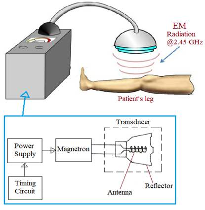
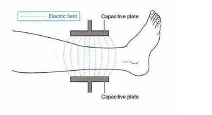
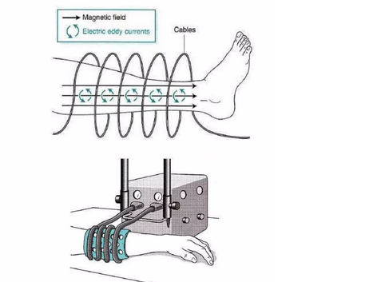

Block diagram

Working
-
Shortwave diathermy (SWD) works by using high-frequency electromagnetic waves to produce heat deep within the tissues of the body. The machine that produces the SWD emits these waves, which penetrate the skin and tissues beneath it.
- When the waves encounter the tissues, they cause the molecules in the tissues to vibrate rapidly, creating friction and generating heat. This heat can help to increase blood flow to the area, which can promote healing and reduce pain and inflammation.
-
The fingers, palms and foot soles are the parts of the body that respond to emotional and other psychological stimuli. As shown in Exhibit 20, the middle and index finger are ideal locations to place the electrodes, typically on the non-dominant hand so that respondent is free to use the dominant hand.
-
SWD can be used in two different ways: capacitive and inductive. Capacitive SWD uses electrodes placed on the skin, which act as a capacitor to create an electrical field that produces heat. Inductive SWD uses a coil that is placed close to the skin, which generates an electromagnetic field that produces heat.
-
During a SWD treatment, the patient lies down while the SWD machine is positioned over the affected area. The treatment time and intensity can be adjusted depending on the condition being treated and the individual patient's needs.
-
It's important to note that SWD should only be administered by a trained healthcare professional and should not be used in certain situations, such as near metal implants or in patients with certain medical conditions.
Types

There are several types of stethoscopes, including:
- Capacitive shortwave diathermy:
In this type, the electromagnetic field is generated between two electrodes placed on the surface of the skin. The electrodes are usually large metal plates or pads that are placed on either side of the treatment area. Capacitive shortwave diathermy is often used for treating large body areas, such as the back or thigh.

- Inductive shortwave diathermy:In this type, the electromagnetic field is generated by a coil placed close to the skin. The coil is usually shaped like a drum and is positioned around the treatment area. Inductive shortwave diathermy is often used for treating smaller body areas, such as the knee or shoulder.

Applications
- Pain relief: SWD can be used to help alleviate pain in areas of the body such as the neck, back, and joints. The heat generated by SWD can help to reduce inflammation and increase blood flow, which can help to reduce pain.
- Muscle and joint injuries: SWD can be used to treat muscle strains, sprains, and other soft tissue injuries. The heat generated by SWD can help to increase blood flow to the affected area, which can promote healing and reduce pain and stiffness.
- Arthritis: SWD can be used to treat arthritis, including osteoarthritis and rheumatoid arthritis. The heat generated by SWD can help to reduce inflammation and stiffness in the joints, which can help to alleviate pain and improve range of motion.
- Scar tissue: SWD can be used to treat scar tissue, such as after surgery or injury. The heat generated by SWD can help to break down scar tissue and promote healing.
- Chronic pain: SWD can be used to treat chronic pain conditions, such as fibromyalgia or chronic fatigue syndrome. The heat generated by SWD can help to reduce pain and improve circulation, which can help to alleviate symptoms.